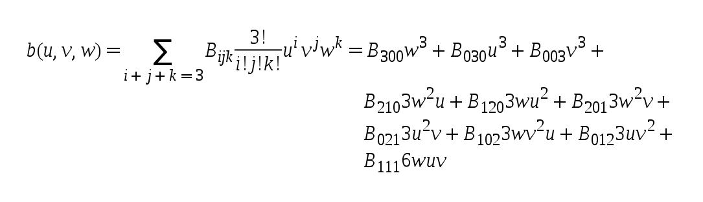
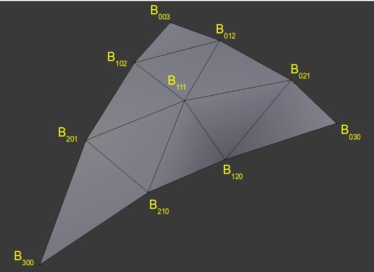
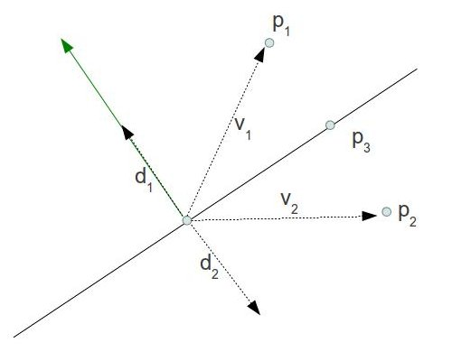

Background
In the previous tutorial we got introduced to Tessellation in OpenGL 4.x (this tutorial relies heavily on the material covered by the previous one so make sure you are familiar with it). We enabled all the relevant stages and learned how to subdivide our mesh and displace the vertices that were created by the Tessellation process in order to transform a dull flat quad into a complex rocky terrain. Usage of the Tessellation pipeline was fairly simple, though. The evaluation in the TES was just an interpolation of the vertices of the original triangle using the barycentric coordinates generated by the PG. Since the results of the interpolation were located on the plane of the original triangle we had to use displacement mapping in order to create bumps on the surface.
In this tutorial we will explore a more advanced Tessellation technique known as PN (Point-Normal) Triangles. This technique was the subject of a 2001 paper by Vlachos et al and was also covered in a GDC2011 presenation called "Tessellation On Any Budget" by John McDonald. The idea explored by these papers was to replace each triangle in the original mesh by a geometric surface known as a Bezier Surface in order to smooth out a low polygon mesh.
Bezier Surfaces were invented by Pierre Bezier in the 1960s as a method of describing the curves of automobile bodies. In a nutshell, a Bezier Surface is polynomial function which described a smooth and continuous surface which is fully contained within a set of control points (CP). The polynomial has a special attribute whereas by moving a CP the surface is affected mostly in the vicinity of that CPs. The effect becomes less visible as we move away from that CP. You can picture this as a highly delicate and flexible cloth lying on the floor. If you pull the cloth upwards at a specific point the curve that will be formed will become less and less noticeable in the distant parts of the cloth (if the cloth was infinitely flexible the effect may even become non-existant at some point).
The polynomial of the Bezier surface is defined over the unit square. That is, by plugging into the function various combinations of two numbers in the range [0-1] we get a point in 3D space which is exactly on the smooth surface that the polynomial describes. If you plug in many pairs of numbers in the unit square and plot the result on the screen you will eventually get a good approximation of the surface.
We are going to use a special case of a Bezier Surface called a Bezier Triangle which has the following form:
Let's decipher this step by step. 'u/v/w' are barycentric coordinates (i.e. they always maintain the equation 'u + v + w = 1'). The ten 'Bxyz' are CPs. We are going to deviate a bit from the classical definition of a Bezier Triangle and place the CPs as follows:
As you can see, the general form of the CPs resembles a somewhat puffy surface on top of a triangle. By evaluating a lot of barycentric coordinates in the polynomial above we will get an exproximation of that surface in 3D space.
Let's see how to integrate these mathematical concepts into the Tessellation pipeline. We are going to start with a triangle and this will be our input patch (same as in the previous tutorial). We will generate the 10 CPs and determine the TLs in the TCS. The PG will subdivide the triangle domain according to the TLs and the TES will be executed for each new point. The TES will plug the barycentric coordinates from the PG and the 10 CPs from the TCS into the polynomial of the Bezier triangle and the result will be a coordinate on the puffy surface. From here on things will run as usual.
The one thing we still need to figure out is how to generate the CPs. The method suggested by the PN Triangles algorithm is as follows:
- The original vertices of the triangle remain unchanged (and are named B003, B030 and B300).
- Two midpoints are generated on each edge - one on 1/3 of the way the other on 2/3.
- Each midpoint is projected on the plane created by the nearest vertex and its normal:
The picture above shows the triangle from the side. Each of the two endpoints has its own normal (in green) from the original mesh. The combination of a point and a normal creates a plane. We take the two midpoints that were calculated earlier and project them to the plane of the nearest vertex (see the dashed arrows).
- In order to calculate the position of B111 we take a vector from the original triangle center (average of the three vertices) to the average of the 6 midpoints (after projection). We continue along that vector for one half of its length.
The reasoning behind this scheme is very simple. When you have an area of the mesh which is fairly flat it means that most vertex normals there will point towards the same general direction which will not be far off from the true triangle normal. This means that when we project the midpoints on the planes they would not move away very far from the triangle surface. This will result in a mild "puffiness" in that area. But if the area is very curved it means the midpoints would move further away to overcome the jagged nature of that area. In the demo you can see that we start with a low polygon model of Suzanne, Blender's mascot character, which has about 500 polygons. Breaking of the silhouette is very noticeable, particularly around Suzanne's head. By projecting the midpoints as described above to create CPs and using the Tessellator to evaluate the Bezier Triangle created by this CPs we are able to provide a much smoother model without any artistic resources.
References:
- Vlachos Alex, Jorg Peters, Chas Boyd and Jason L. Mitchell. "Curved PN Triangles". Proceedings of the 2001 Symposium interactive 3D graphics (2001): 159-66.
- John McDonald. "Tessellation On Any Budget". Game Developers Conference, 2011.
Source walkthru
(lighting.vs:13)
void main()
{
WorldPos_CS_in = (gWorld * vec4(Position_VS_in, 1.0)).xyz;
TexCoord_CS_in = TexCoord_VS_in;
Normal_CS_in = normalize((gWorld * vec4(Normal_VS_in, 0.0)).xyz);
}
The VS contains only one change from the previous tutorial - the normal must be normalized after the world transformation. The reason is that the TCS relies on the normal having a unit length. Otherwise, the new CPs above the surface won't be generated correctly. If the world transformation contains a scaling operation the normals won't have unit length and have to be normalized.
(lighting.cs)
#version 410 core
// define the number of CPs in the output patch
layout (vertices = 1) out;
uniform float gTessellationLevel;
// attributes of the input CPs
in vec3 WorldPos_CS_in[];
in vec2 TexCoord_CS_in[];
in vec3 Normal_CS_in[];
struct OutputPatch
{
vec3 WorldPos_B030;
vec3 WorldPos_B021;
vec3 WorldPos_B012;
vec3 WorldPos_B003;
vec3 WorldPos_B102;
vec3 WorldPos_B201;
vec3 WorldPos_B300;
vec3 WorldPos_B210;
vec3 WorldPos_B120;
vec3 WorldPos_B111;
vec3 Normal[3];
vec2 TexCoord[3];
};
// attributes of the output CPs
out patch OutputPatch oPatch;
This is the start of the TCS with the changes marked in bold face. The first thing to note is that we are outputing a single CP. You may find this odd since the whole idea behind PN Triangles is to create a Bezier triangle with 10 CPs on top of the original triangle. So why are we declaring a single output CP instead of 10? the reason is that the main TCS function will be executed as many times as the defined output CPs value. In this algorithm we need to treat some of the points a bit differently than the others which makes it a bit difficult to use the same function for all points. Instead, I've encapsulated all the data of the output patch in the OutputPatch struct above and declared an output variable called oPatch of that type. The TCS main function will run once for each patch and this struct will be populated with data for all the 10 CPs. The implementation that McDonald presented in GDC 2011 (see references) provides a version which may be more efficient. In his version the TCS is executed three times which enables the GPU to distribute the work of a single patch across three threads. In general, if the output CPs are generated using the same algorithm it is better (from a performance point of view) to implement that algorithm as-is in the TCS and have it execute for as many output CPs as you need.
Another thing to note is that oPatch is prefixed by the builtin keyword patch. This keyword says that the variable contains data which pertains to the entire patch and not the current output CP. The compiler can use that as a hint to make sure that the code that updates such a variable will run once per patch instead of once per CP (since GPUs will strive to update each output CP in a different HW thread).
The final change in this section is that the eye position uniform variable has been replaced with a tessellation level variable. Instead of setting the TL according to the distance from this camera (as in the previous tutorial) we allow the user to configure it using the '+' and '-' keys. This makes it simpler to stand close to the model and see the effect of changing the TL.
(lighting.cs:76)
void main()
{
// Set the control points of the output patch
for (int i = 0 ; i < 3 ; i++) {
oPatch.Normal[i] = Normal_CS_in[i];
oPatch.TexCoord[i] = TexCoord_CS_in[i];
}
CalcPositions();
// Calculate the tessellation levels
gl_TessLevelOuter[0] = gTessellationLevel;
gl_TessLevelOuter[1] = gTessellationLevel;
gl_TessLevelOuter[2] = gTessellationLevel;
gl_TessLevelInner[0] = gTessellationLevel;
}
This is the main function of the TCS. The three normals and texture coordinates are copied as-is from the input into the output patch. The 10 CPs that we are going to generate contain only a position value. This is done in a dedicated function called CalcPositions() which is executed next. Finally, the TLs are set according to the uniform variable.
(lighting.cs:41)
void CalcPositions(
{
// The original vertices stay the same
oPatch.WorldPos_B030 = WorldPos_CS_in[0];
oPatch.WorldPos_B003 = WorldPos_CS_in[1];
oPatch.WorldPos_B300 = WorldPos_CS_in[2];
// Edges are names according to the opposing vertex
vec3 EdgeB300 = oPatch.WorldPos_B003 - oPatch.WorldPos_B030;
vec3 EdgeB030 = oPatch.WorldPos_B300 - oPatch.WorldPos_B003;
vec3 EdgeB003 = oPatch.WorldPos_B030 - oPatch.WorldPos_B300;
// Generate two midpoints on each edge
oPatch.WorldPos_B021 = oPatch.WorldPos_B030 + EdgeB300 / 3.0;
oPatch.WorldPos_B012 = oPatch.WorldPos_B030 + EdgeB300 * 2.0 / 3.0;
oPatch.WorldPos_B102 = oPatch.WorldPos_B003 + EdgeB030 / 3.0;
oPatch.WorldPos_B201 = oPatch.WorldPos_B003 + EdgeB030 * 2.0 / 3.0;
oPatch.WorldPos_B210 = oPatch.WorldPos_B300 + EdgeB003 / 3.0;
oPatch.WorldPos_B120 = oPatch.WorldPos_B300 + EdgeB003 * 2.0 / 3.0;
// Project each midpoint on the plane defined by the nearest vertex and its normal
oPatch.WorldPos_B021 = ProjectToPlane(oPatch.WorldPos_B021, oPatch.WorldPos_B030,
oPatch.Normal[0]);
oPatch.WorldPos_B012 = ProjectToPlane(oPatch.WorldPos_B012, oPatch.WorldPos_B003,
oPatch.Normal[1]);
oPatch.WorldPos_B102 = ProjectToPlane(oPatch.WorldPos_B102, oPatch.WorldPos_B003,
oPatch.Normal[1]);
oPatch.WorldPos_B201 = ProjectToPlane(oPatch.WorldPos_B201, oPatch.WorldPos_B300,
oPatch.Normal[2]);
oPatch.WorldPos_B210 = ProjectToPlane(oPatch.WorldPos_B210, oPatch.WorldPos_B300,
oPatch.Normal[2]);
oPatch.WorldPos_B120 = ProjectToPlane(oPatch.WorldPos_B120, oPatch.WorldPos_B030,
oPatch.Normal[0]);
// Handle the center
vec3 Center = (oPatch.WorldPos_B003 + oPatch.WorldPos_B030 + oPatch.WorldPos_B300) / 3.0;
oPatch.WorldPos_B111 = (oPatch.WorldPos_B021 + oPatch.WorldPos_B012 + oPatch.WorldPos_B102 +
oPatch.WorldPos_B201 + oPatch.WorldPos_B210 + oPatch.WorldPos_B120) / 6.0;
oPatch.WorldPos_B111 += (oPatch.WorldPos_B111 - Center) / 2.0;
}
This function builds the Bezier triangle on top of the original triangle according to the method described in the background section. The names of the relevant members of the OutputPatch structure match the picture above to make it easier to review. The logic is very simple and follows the algorithm pretty much step by step.
(lighting.cs:32)
vec3 ProjectToPlane(vec3 Point, vec3 PlanePoint, vec3 PlaneNormal)
{
vec3 v = Point - PlanePoint;
float Len = dot(v, PlaneNormal);
vec3 d = Len * PlaneNormal;
return (Point - d);
}
This function is used by CalcPositions() to project a midpoint on the plane defined by the nearest vertex and its normal. The idea is that by doing a dot product between the normal and the vector 'v' from the vertex to the point we want to project we get the length of the projection of 'v' on the normal (the normal must be of unit length). This is exactly the distance between the point and the closest point on the plane (i.e. its projection). We multiply the length by the normal and substract it from point in order to reach the projection. The following picture illustrates this calculation:
P1 and P2 are located on different half spaces created by the plane. When we project v1 on the green normal we get the length of d1. Multiply that length by the normal to receive d1 itself. Now substract it from P1 to get its projection on the plane. When we project v2 on the green normal we get the length of d2 but it is a negative value. Multiply that by the normal to receive d2 itself (negative length means it reverses the normal). Now substract it from P2 to get its projection on the plane. The conclusion: this method works correctly no matter on which side of the plane our point is.
(lighting.es)
#version 410 core
layout(triangles, equal_spacing, ccw) in;
uniform mat4 gVP;
struct OutputPatch
{
vec3 WorldPos_B030;
vec3 WorldPos_B021;
vec3 WorldPos_B012;
vec3 WorldPos_B003;
vec3 WorldPos_B102;
vec3 WorldPos_B201;
vec3 WorldPos_B300;
vec3 WorldPos_B210;
vec3 WorldPos_B120;
vec3 WorldPos_B111;
vec3 Normal[3];
vec2 TexCoord[3];
};
in patch OutputPatch oPatch;
out vec3 WorldPos_FS_in;
out vec2 TexCoord_FS_in;
out vec3 Normal_FS_in;
vec2 interpolate2D(vec2 v0, vec2 v1, vec2 v2)
{
return vec2(gl_TessCoord.x) * v0 + vec2(gl_TessCoord.y) * v1 + vec2(gl_TessCoord.z) * v2;
}
vec3 interpolate3D(vec3 v0, vec3 v1, vec3 v2)
{
return vec3(gl_TessCoord.x) * v0 + vec3(gl_TessCoord.y) * v1 + vec3(gl_TessCoord.z) * v2;
}
void main()
{
// Interpolate the attributes of the output vertex using the barycentric coordinates
TexCoord_FS_in = interpolate2D(oPatch.TexCoord[0], oPatch.TexCoord[1], oPatch.TexCoord[2]);
Normal_FS_in = interpolate3D(oPatch.Normal[0], oPatch.Normal[1], oPatch.Normal[2]);
float u = gl_TessCoord.x;
float v = gl_TessCoord.y;
float w = gl_TessCoord.z;
float uPow3 = pow(u, 3);
float vPow3 = pow(v, 3);
float wPow3 = pow(w, 3);
float uPow2 = pow(u, 2);
float vPow2 = pow(v, 2);
float wPow2 = pow(w, 2);
WorldPos_FS_in = oPatch.WorldPos_B300 * wPow3 +
oPatch.WorldPos_B030 * uPow3 +
oPatch.WorldPos_B003 * vPow3 +
oPatch.WorldPos_B210 * 3.0 * wPow2 * u +
oPatch.WorldPos_B120 * 3.0 * w * uPow2 +
oPatch.WorldPos_B201 * 3.0 * wPow2 * v +
oPatch.WorldPos_B021 * 3.0 * uPow2 * v +
oPatch.WorldPos_B102 * 3.0 * w * vPow2 +
oPatch.WorldPos_B012 * 3.0 * u * vPow2 +
oPatch.WorldPos_B111 * 6.0 * w * u * v;
gl_Position = gVP * vec4(WorldPos_FS_in, 1.0);
}
This is the entire TES with changes from the previous tutorial marked in bold face. The normal and texture coordinates are interpolated the same as before. In order to calculate the world space position we plug the barycentric coordinates into the Bezier triangle equation we saw in the background section. The builtin function pow() is used in order to calculate the power of a number. We transform the world space position to clip space and continue as usual.